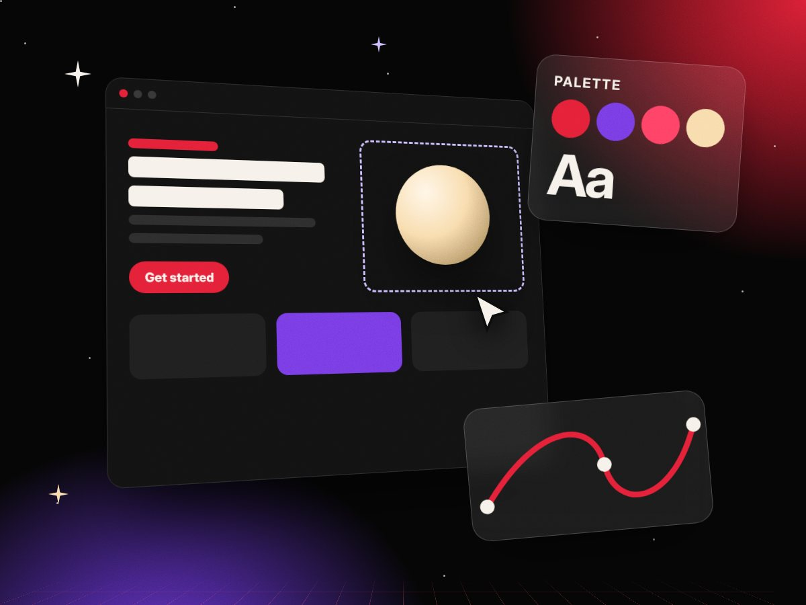

01Research-led interfaces
Discuss UI/UX Design
UI/UX Design
Interfaces that feel effortless. I start with your users, map clear journeys, then polish every screen until it looks and feels premium.
What's included
- User research
- User flows
- Wireframes
- High-fidelity UI
- Clickable prototypes
- Mobile app design
- Design systems